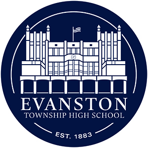

Android Calling Card
Kotlin, Jetpack Compose, Design Docs, Data Services, State Management
As part of my internship at Google, I end-to-end engineered a feature for Android's Calling Card.
My work involved creating a Material Color Utilities API allowing developers to find contrasting text to an image to support accessibility goals, and using the API to develop contrasting colors for Calling Card's setup, including intdoducing a "smart color" that contrasted the image while matching its hue. The feature is used by .3 billion active daily users, and the phone app handles 7 billion daily phone calls.
AI Photobooth
Python, Streamlit, Vertex API
For UIUC's Engineering Open House, I created an AI photobooth that took photos of visitors, analyzed their emotions , and generated backgrounds that matched its interpretation of their emotions. Our booth attracted over 300 visitors over two days, who used the experience to learn about the benefits and limitations of artificial intelligence when it comes to interpretation and creativity. I also loved the opportunity to get kids excited about AI and to teach them that computers and creativity can go hand in hand. I also set up a program to automatically save and email the strips to visitors, so that they'd have a little souvenir to take home from the fair.
Chrome Support Intern
I was an intern at my high school's Chromebook help desk from 2021 to 2024.
Responsibilities:
Delivered front line customer support within the school's central help desk to support students and staff with their Chromebook computers
Checked in/out loaners and customer devices coming in/out of repair
Diagnosed and performed troubleshooting on out-of-warranty Chromebooks
Performed technical repairs through software updates and replacement of major parts including batteries, screens, keyboards, motherboards, and other modular components